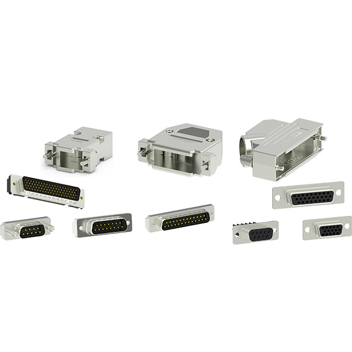

工业连接器一般都有哪几种连接方式
2019-10-24
工业连接器的主要作用就是在环境恶劣的情况下设计成了以太网的连接，与其他类型的连接器相比它的优点是更坚韧，而且抵抗力很好。
工业连接器的连接形式可以分为几种？一般可分为四种形式。
1、 螺纹连接方式：一些具有较大尺寸的接触件和在强烈振动环境中工作的电连接器经常采用的一种连接形式。这种连接形式在完成连接后可装上防止松动的保险丝。该连接形式使用可靠，但连卸速度慢。

2、卡口连接方式：是一种可靠迅速的连接和分离形式。大多数卡扣连接形式的电连接器都具有正确的连接和锁定的直观显示，可以从电连接器连接螺母侧面的小孔中进行观察。
3、插拔连接方式：是一种有多用途的连接形式。电连接器的插头与插座在连接和分离时其移动方向通常是往复直线运动，不须扭转和旋转，只需要很小的工作空间即可完成连卸。常见的插拔连接有滚珠或销钉两种结构。该连接形式因为没有机械上省力的机构，一旦误插，机械阻力明显增大，能及时被发现。
4、机柜连接方式：是用于某些靠近框架需要盲目连接的设备上的电连接器，可以使电气设备做得较轻较小，较容易维护和更可靠。这种连接形式使操作者无法感觉到连接的情况，必须设计一种准确的定位装置，以避免将误插的电连接器强制连接到一起，使误插成为不可能。机柜式电连接器通常采用浮动或弹性接触设计结构来保证其正确的连接。
连接器基于基本的连接功能为设备提供了数十年的服务保证，随着应用环境的不断恶化，原始连接器的性能和可靠性都会随之下降，这便促使了新型连接器的激情创新。